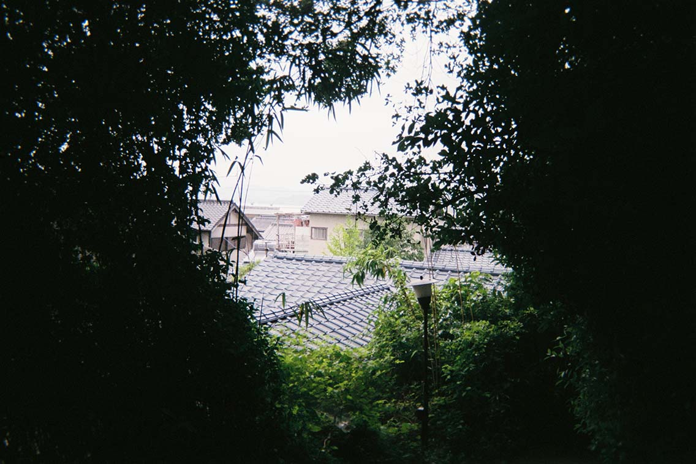
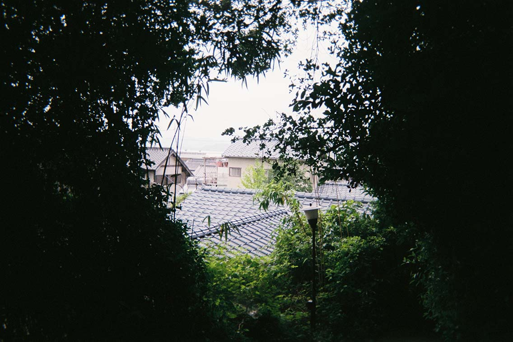

WILL NOT BEFALL
A YOUNG LADY
IN HER OWN VILLAGE
SHE MUST
SEEK THEM ABROAD'
- Jane Austen
Journeying Japan: a 35mm diary
-last summer I travelled around Japan: these are the places and faces that stuck with me-


 



fun facts & a little about me
- I’m a postgraduate researcher in philosophy by day, passionate developer-in-training by night and dilettante art-tinkering painter and poet on weekends!
- I have a burning passion for social issues, especially those at the crossroads of intersectional feminism.
- I am a crazy-plant-lady: over the past three years I have turned little London flats where I've lived into urban jungles. I use gardening as a practice of mindfulness and loving kindness and, not only is it a great tool for mental health, but my plants seem to love it too (except when I relentlessly sing-along to David Bowie’s Platinum Collection).
- At 17, I moved to the UK by myself, my English was poor and I was broke. Eight years later I have made a family out of friends and a home out of this country: it is my proudest accomplishment.
- My favourite page on Facebook is called Italians Mad at Food. The principle is “post an attempt an Italian cuisine and wait for Italians to rip it apart”. I suggest you join it for daily entertaining and lots of hilariously angry Italians.
“Girls don’t code!”, fantabulous women in tech & why I want to be part of FAC (a.k.a my coding journey)
Has anyone ever told you that you could not do something because of your biological gender? If you belong to the queer community or, most likely, simply identify as a woman the answer is probably yes.
Growing up in a little Italian village, I always preferred playing with the boys because they got to do all the fun things: climbing trees, hunting beetles and lizards, play fight and race on bikes. Since those days of fun and games I have felt the expectations and demands of my biological gender and my defiant spirit towards them has not changed a bit.
Fast forward a decade, I went to university to study philosophy, politics and economics, thinking “this is the right degree to get somewhere where I can do something that matters”. I got involved in the societies where I felt like I could start doing that something: Labour, LGBTQ+ and International society in particular. I read so much feminist literature, I studied how political change happens and yet, I had not found what I like to call my “niche”. You know what I mean: the angle, the point in which you can actually make a difference to someone.
Then, someone I was friends with a the time, who was studying towards an undergraduate in Computer Science, during a discussion about how many languages we knew told me he know 12 languages. I was astonished: I speak three and learning them was no joke. He “mansplained” how computer languages are kind of similar and once you learn one, learning others is only a matter of syntax, so I told him that, maybe, I was going to try out coding. He laughed: “girls don’t code! There’s not a single girl on my course and the couple ones in the whole department are gremlins”.
That was the start of my coding journey.
Starting anything is generally always terrifying and coding is no different. So, I sought out safe spaces: I joined WWCode UK, started an Introduction to Web Development course with CodeFirstGirls and begun attending Codebar meet-ups. The support, encouragement and solidarity I have received from people in these organisations is unprecedented. I listened avidly to their stories and their (mostly) unconventional journey to software engineering and the message has always been “you can do it”.